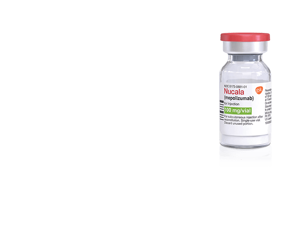

NUCALA should not be administered to patients with a history of hypersensitivity to mepolizumab or excipients in the formulation.
WARNINGS AND PRECAUTIONS
Hypersensitivity Reactions
Hypersensitivity reactions (eg, anaphylaxis, angioedema, bronchospasm, hypotension, urticaria, rash) have occurred with NUCALA. These reactions generally occur within hours of administration but can have a delayed onset (ie, days). If a hypersensitivity reaction occurs, discontinue NUCALA.
Acute Asthma Symptoms or Deteriorating Disease
NUCALA should not be used to treat acute asthma symptoms, acute exacerbations, or acute bronchospasm.
Opportunistic Infections: Herpes Zoster
In controlled clinical trials, 2 serious adverse reactions of herpes zoster occurred with NUCALA compared to none with placebo. Consider vaccination if medically appropriate.
Reduction of Corticosteroid Dosage
Do not discontinue systemic or inhaled corticosteroids abruptly upon initiation of therapy with NUCALA. Decreases in corticosteroid doses, if appropriate, should be gradual and under the direct supervision of a physician. Reduction in corticosteroid dose may be associated with systemic withdrawal symptoms and/or unmask conditions previously suppressed by systemic corticosteroid therapy.
Parasitic (Helminth) Infection
Treat patients with pre-existing helminth infections before initiating therapy with NUCALA. If patients become infected while receiving NUCALA and do not respond to anti-helminth treatment, discontinue NUCALA until infection resolves.
ADVERSE REACTIONS
The most common adverse reactions (≥3% and more common than placebo) reported in the first 24 weeks of 2 clinical trials with NUCALA (and placebo) were: headache, 19% (18%); injection site reaction, 8% (3%); back pain, 5% (4%); fatigue, 5% (4%); influenza, 3% (2%); urinary tract infection, 3% (2%); abdominal pain upper, 3% (2%); pruritus, 3% (2%); eczema, 3% (<1%); and muscle spasms, 3% (<1%).
Systemic Reactions, including Hypersensitivity Reactions: In 3 clinical trials, the percentages of subjects who experienced systemic (allergic and nonallergic) reactions were 3% for NUCALA and 5% for placebo. Manifestations included rash, flushing, pruritus, headache, and myalgia. A majority of the systemic reactions were experienced on the day of dosing.
Injection site reactions (eg, pain, erythema, swelling, itching, burning sensation) occurred in subjects treated with NUCALA.
USE IN SPECIFIC POPULATIONS
A pregnancy exposure registry monitors pregnancy outcomes in women exposed to NUCALA during pregnancy. To enroll call 1-877-311-8972 or visit www.mothertobaby.org/asthma.
The data on pregnancy exposures are insufficient to inform on drug-associated risk. Monoclonal antibodies, such as mepolizumab, are transported across the placenta in a linear fashion as the pregnancy progresses; therefore, potential effects on a fetus are likely to be greater during the second and third trimesters.
To report SUSPECTED ADVERSE REACTIONS, contact GSK at 1-888-825-5249 or FDA at 1-800-FDA-1088 or www.fda.gov/medwatch.
Data you need to know
about choosing a TARGETED THERAPY
See the strong foundation of
evidence supporting NUCALA for severe eosinophilic asthma

NUCALA is indicated for the add-on maintenance
treatment of patients 12 years and older with
severe asthma with an eosinophilic phenotype.
NUCALA is not indicated for the relief of acute
bronchospasm or status asthmaticus.
CONSIDER NUCALA
The first anti-interleukin 5 (IL-5) for severe eosinophilic asthma